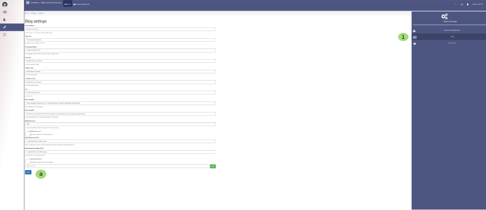
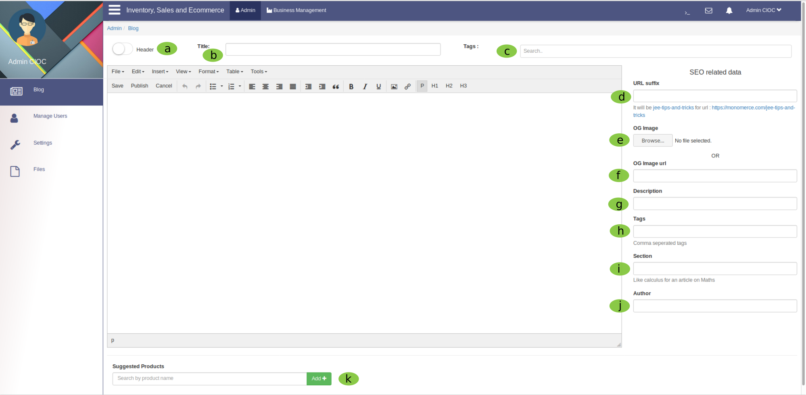

Blog¶

Above image is showing you a view of blog management Section.
- Click here to create a new Blog it will open a new tab

Follow the below step to create a new blog.
- This is toggle button you can switch between body and header while writing a blog if you have to write content in header section enable it on header and when you have to write content in body section enable it on body.
- Here give the title of blog.
- Here seach the tag for that blog and select it accordingly.
- From here onwards you have to fill the seo related data here first you enter URL suffix for eg. .org, .com, .in accordingly.
- Here you set the og image (open graphics image) or
- Here you fill the url of OG image.
- Here write the description .
- Here write the tags for your blog and tags should be seplrated by comma.
- Here enter the name of section .
- Here enter the author name of particular blog.
- Here search the product which you want to attach to this blog just enter the name of product and click on add and your blog is created.
- You can check your blog by entering the title of blog here.
- Here you enter the name of category and it will you the particular category’s blog only.
- Click here to see All Articles and it will take you back to My Articles this single button will help you to switch betweem both.
- Click here to see Published and it will take you back to Drafts this single button will help you to switch betweem both.
- This is a perveious button to check the previous page blog.
- This is a next button to check the previous page blog.